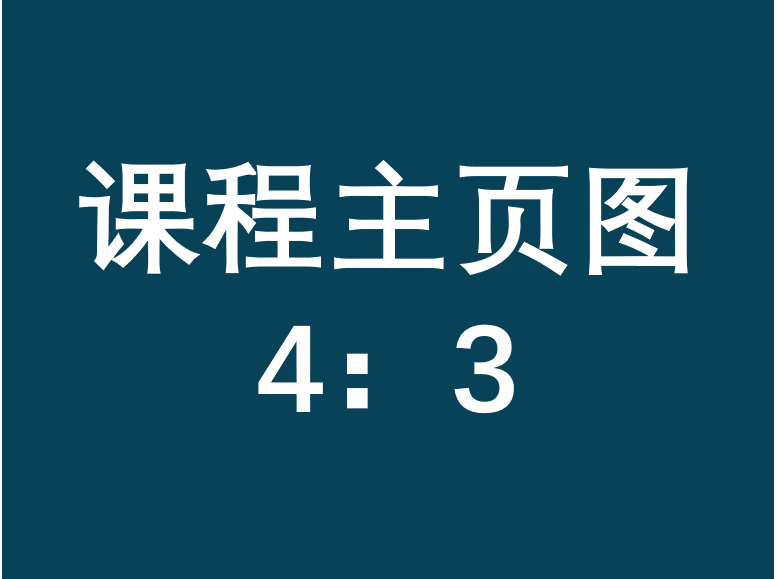

课程简介

A01.计算机视觉（本科）
计算机视觉入门首选，帮你建立完整的视觉体系大纲。
什么是计算机视觉？计算机视觉的基本任务有哪些？都用怎样的方法解决？ 本课程将着眼于计算机视觉的基本框架，带领大家从最基础的必备图像处理技巧开始， 首先探索图片基本信息（诸如边缘、尺度不变的特征点，直线或基本图形的拟合、纹理等）的提取和应用。 然后,我们将一起着眼于计算机视觉的基本任务的解决方法，即分割问题、识别问题、检测问题。 同时，本课程也会带领大家进入立体视觉的世界，以运动恢复结构为例打开3D大门。
资源整合
| 任务点 | 摘要 | 资料下载 |
|---|---|---|
| 01.课程引言 | 简介 | [课件(直接下载)] |
| 02.卷积 | 简介 | [课件(直接下载)] |
| 03.边缘提取 | 简介 | [课件(直接下载)] |
| 04.拟合 | 简介 | [课件(直接下载)] |
| 05.Harris角点 | 简介 | [课件(直接下载)] |
| 06.尺度不变区域与sift特征 | 简介 | [课件(直接下载)] |
| 07.纹理 | 简介 | [课件(直接下载)] |
| 08.分割任务 | 简介 | [课件(直接下载)] |
| 09.识别任务与词袋模型 | 简介 | [课件(直接下载)] |
| 10.目标检测 | 简介 | [课件(直接下载)] |
| 11.三维重建任务与摄像机模型 | 简介 | [课件(直接下载)] |
| 12.摄像机标定、三维重建基础、极几何 | 简介 | [课件(直接下载)] |
| 13.运动恢复结构 | 简介 | [课件(直接下载)] |
| 14.课程总结 | 简介 | [课件(直接下载)] |
| 作业 | 简介 | [课件(直接下载)] |